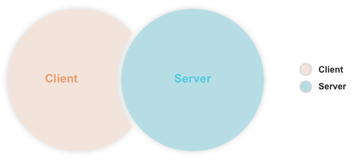
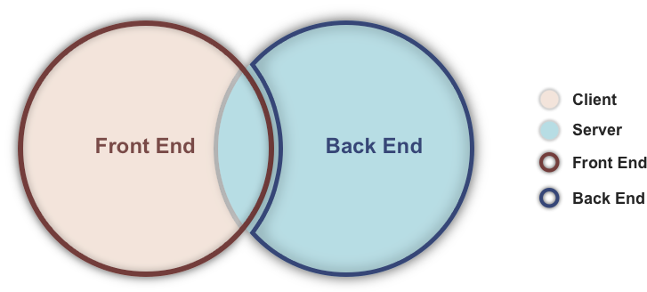

What is HTML?
HTML is a markup language.
HyperText Markup Language
Need more info?
- HTML is a document, thus it should only contain content.
- As a markup language, it lays out and annotates content.
- It should provide semantics, you know, for the content.
Content seems important...
- Can it be translated?
- Will it stay the same between two different designs?
- Is it bound to other content?
- Is it stored in a database?
- Are there any business rules applicable?
If any of the above is answered with YES...
then you got yourself some
content*
Why should I care?
Well, when a web server receives a request
it prepares an HTML response, which in turn links to CSS & JS files.
And that is your Web application
or it's front end at least
Web Front End
In short we have two pals, the server and the client.
This doesn't mean the one holds the front end and the other the back end though
Usual Architecture

Web Architecture

Let's look into more detail
Server receives a request.
↓
Server produces an HTML response and sends that to the client
↓
Client (Browser) interprets that HTML and it's linked CSS & JS files...
↓
... and presents the resulting web page
What about this "produces" an HTML response?
Well that's where we got a front end component on our server. We are talking about the Front End template files, known in the Geekdom as:
- JSP - Java Server Pages
- ERB - Embedded RuBy
- PHP Templates
Template files
We do not write every possible HTML response by hand.
We are using Server Side Front End Files to produce them dynamically on interpretation.
To do so effectively
- We need to break down the markup in resuable bits.
The header, footer & sidebar for example.
- We need to create FE logic, that will produce parts of our markup.
Echoing the account-type in that account class attribute.
- Server prepares the Markup for the Client to turn it into a UI.
enter the
DOM*
What is the DOM?
It's a cross-platform, language-independent convention for representing and interacting with objects in HTML, XHTML and XML documents.
Think of it as a view to the browsers memory.
The DOM holds all the objects the browser uses for the received document.
Let's look into more detail
Browser receives an HTML document as a response.
↓
Browser reads the received source code, and creates the initial DOM.
↓
Browser will fetch & execute the linked CSS & JS files.
↓
... by doing so, the browser is now using a
manipulated DOM
So how do we get a glimpse of this DOM thing?
Open your browser's developer tools
Usually right click → inspect element
or CTRL/CMD + F12
HTML Elements
Every HTML tag creates an HTML element. The browser creates an Object for that in the DOM,
so we can play with.
Let's explore some block elements!
Block elements are used mainly for laying out content.
Let's explore some inline elements!
Inline elements are mainly text annotators.
Attributes
Every HTML tag can take some attributes, that further define it.
Some of them are optional, while others are mandatory.
Let's explore some Identifiers!
id="x" and class="y z w" attributes are used to identify elements.
Let's explore some more attributes!
That's it with plain HTML.
Where can I find more?
Ok, now, how can I make it more appealing? →
Design equals
CSS*
What is CSS?
CSS is a stylesheet file, responsible for a document's design.
CSS files enable the separation of content and design.
CSS files enable multiple presentations for a single document.
CSS Anatomy
Every CSS file consists of a set of rules, also know as styles.
Every rule consists of a selector and a set of property declarations.
selector {
property-name: value;
property-name: value;
}
Selectors
Selectors match the HTML elements for which the rule applies.
Every selector may match more than one element. Even if it contains an ID, though that shouldn't happen.
How do we write a selector pt.1
You define a selector for a <div> element like so: div
You specify a class in a selector like so: .class
You specify an id in a selector like so: #id
You can mix and match like so: div#header.floating
How do we write a selector pt.2
You can say what parent an element should have like so: #header div
You can group more than one selectors together like so: .floater, a, span
Finally there are pseudo-selectors, typed: span:not(.error),
a:hover & ul li:first-child.
The range of tools we have to create a selector is huge, the above should fit 99% of the cases though
Declarations
Declarations are typed like so:
background-color: red;.
Every declaration starts with the property-name and follows the desired value.
Every rule can have more than one declarations
Declarations actually tells the browser to manipulate the DOM Object.
Basic Properties pt.1
Properties used for layouts are:
display: block /inline /inline-block /table /table-cell;position: absolute /relative /static /fixed;float: right /left /none;
Let's see some of those live.
Basic Properties pt.2
Font Related Properties are:
font-size: 12px /100% /0.75em /10pt;line-height: 16px /125% /1em /14pt;font-family: Helvetica, Arial, sans-serif;
Let's see some of those live.
Shorthand
Using shorthand declarations we can set many properties at once:
font: 12px bold Georgia, Times, serif;margin: 16px 125% 1em 0px;background: url(..img/pic.jpg) 10px bottom no-repeat;
Let's see some of those live.
What's this
Cascading*
thing?
Later Rules
Override
previous rules
More Specific Rules
Override
less specific rules
!important Rules
Override
not !important rules
these laws
cascade
as well! All fights have a winner.
Overriding
How to write a good overriding selector.
- We place the code in the end of relevant section.
- We define a selector, as unspecific as possible.
- We group special cases, until we have enough to define a new class.
- We only declare !important, if a declaration is really important.
Every time an !important rule is overriden, a kitten dies!
Inheritance & Defaults
Inheritance, like in real life is the ability to gain your parents properties, without any effort on your part.
There are properties that are inherited by default, while others are not.
We can force inheritance, using something like
display: inherit;
Browsers have default stylesheets → default styles.
Let's see about that...
CSS3 & Graceful Degradation
CSS3 is the latest W3C draft on CSS.
Many new modules, let's play at the CSS3 Playground.
Seriously, most of the new stuff is there!
To achieve degradation, we leverage the Cascading effects of CSS
Let's try that live!
Development Standards
Our good practices are:
- Organize CSS files into sections, place rules wisely.
- When special cases occur, group them together, then if many create new class.
- Use correct spacing, indentation and group declarations into imaginary groups.
Let's see some of those live.